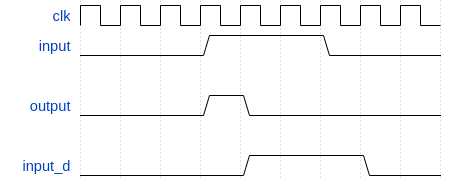
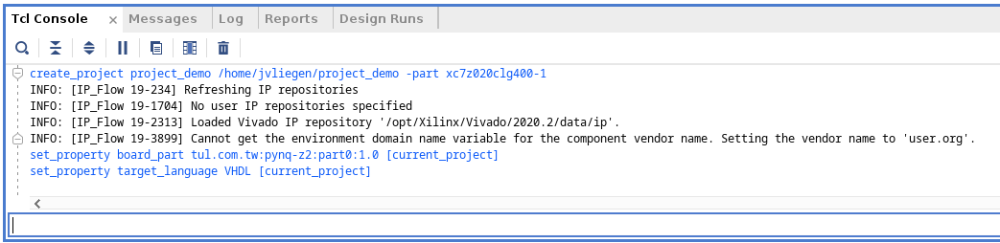

Soms is het handig om signalen te verkorten. Een stuursignaal kan, bijvoorbeeld, enkele clock cycles hoog zijn. De hardware echter verwacht een hoog signaal dat precies 1 clock cycle duurt.
Van zodra je begint te denken “nu moet dit zijn en daarvoor moest dat zijn … FF-tijd.

-- entity
-- architecture
signal input_d : STD_LOGIC;
-- begin
PREG: process(clock_i)
begin
if rising_edge(clock_i) then
input_d <= input_i;
end if;
end process;
output_i <= input_i AND not(input_d);
-- end architecture
Het is uiterst belangrijk dat bij een MUX ALLE outputs een waarde toegekend krijgen, voor elke mogelijke conditie!! Je kan jezelf beschermen van de zonde om dit te vergeten door te werken met een “default”-waarde.
Het voorbeeld hiernaast ziet er op het eerste zicht correct uit en volgens de VHDL syntax is dit ook zo. Afhankelijk van de laatste bit zal het signaal getal_is_even hoog worden, of getal_is_oneven.
Dit zijn eigenlijk twee muxen, die in één proces beschreven worden!!
-- entity
-- architecture
signal getal : STD_LOGIC_VECTOR(3 downto 0);
signal getal_is_even, getal_is_oneven : STD_LOGIC;
-- begin
PMUX: process(getal)
begin
if getal(0) = '1' then
getal_is_oneven <= '1';
elsif getal(0) = '0' then
getal_is_even <= '1';
end if;
end process;
-- end architecture
-- entity
-- architecture
signal getal : STD_LOGIC_VECTOR(3 downto 0);
signal getal_is_even, getal_is_oneven : STD_LOGIC;
-- begin
PMUX: process(getal)
begin
if getal(0) = '1' then
getal_is_oneven <= '1'; getal_is_even <= '0';
elsif getal(0) = '0' then
getal_is_oneven <= '0'; getal_is_even <= '1';
end if;
end process;
-- end architecture
In deze twee voorbeelden is er in de beschrijving gezorgd dat voor alle mogelijkheden een waarde beschikbaar is. Het eerste voorbeeld doet dit expliciet. Wanneer er veel uitgangen zijn, kan dit snel omslachtige worden. Het tweede voorbeeld kan dan een oplossing vormen, door eerst default waardes toe te kennen aan alle uitgangen.
-- entity
-- architecture
signal getal : STD_LOGIC_VECTOR(3 downto 0);
signal getal_is_even, getal_is_oneven : STD_LOGIC;
-- begin
PMUX: process(getal)
begin
getal_is_oneven <= '0';
getal_is_even <= '0';
if getal(0) = '1' then
getal_is_oneven <= '1';
elsif getal(0) = '0' then
getal_is_even <= '1';
end if;
end process;
-- end architecture
VHDL is een expliciete taal. Er moet veel code geschreven worden, als we het aantal “karakters” tellen in een beschrijving.
Tegenwoordig bestaan er tal van general purpose editors. Aangezien VHDL-bestanden gewone tekstbestanden zijn, kunnen deze ook perfect in een editor geschreven worden. Voorbeelden van editors zijn: Visual Studio Code, Sublime, Notepad++ en UltraEdit. De meeste editors laten toe om te werken met snippets. Dit zijn onderdelen in de editor die stukken boilerplate code genereren.
Dit is een voorbeeld van een snippet in VS Code. Wanneer er in een .vhd file gewerkt wordt, zal de prefix srff meteen de block code genereren voor een SR-FlipFlop.
Het loont écht de moeite om jezelf goed vertrouwd te maken met 1 editor. Dit soort algemene editors kunnen immers gebruikt worden voor veel talen die je zal gebruiken: Python, VHDL, C, Java, Assembly (😃), HTML, CSS, …
"VHDL SRFF": {
"prefix": "srff",
"body" : [
"-- signal $1, $1_set, $1_reset : STD_LOGIC;",
"$1_set <= ;",
"$1_reset <= ;",
"PSRFF: process(clock_i)",
"begin",
" if rising_edge(clock_i) then",
" if reset_n_i = '0' then ",
" $1 <= '0';",
" else",
" if $1_reset = '1' then ",
" $1 <= '0';",
" elsif $1_set = '1' then ",
" $1 <= '1';",
" end if;",
" end if;",
" end if;",
"end process;"
],
"description": "VHDL boilerplate code for a set-reset flip-flop"
}
Zij, die deze labo’s met Vivado gedaan hebben, hebben misschien al gemerkt dat deze tool niet altijd helemaal werkt zoals dat verwacht wordt. Een tip is om zo weinig mogelijk manueel werk te doen. Het is je misschien al opgevallen dat er een TCL console is. Hiermee kan de tool ook bediend worden met commando’s in plaats van met manuele muiskliks.
Een project aanmaken voor het PYNQ ontwikkelbord vergt 10 muiskliks en 1 tekst-veld manipulatie. Wanneer je naar de TCL console kijkt, zie iets (analoog aan) zoals hieronder. De regels die in het blauw staan, zijn TCL-commandos.

Je kan dus, als alternatief voor als een bezetene rond te klikken, ook deze commando’s uitvoeren. Het resultaat is exact hetzelfde. Aangezien we al genoeg typwerk hebben, is het nog interessanter om een klein script te maken waarin deze commando’s staan.
# TCL script to generate a Vivado project for the PYNQ-Z2 board
#
create_project project_demo /home/jvliegen/project_demo -part xc7z020clg400-1
set_property board_part tul.com.tw:pynq-z2:part0:1.0 [current_project]
set_property target_language VHDL [current_project]
Als we er van uitgaan dat deze TCL-file te vinden is op: /home/username/myscript.tcl, dan volstaat in om in de TCL console van Vivado te typen:
source /home/username/myscript.tcl
Hou de TCL console in de gaten. Je kan, voor elke actie die je in Vivado doet, de commando’s die uitgevoerd worden kopiëren in het TCL script.
Die-hards kunnen zelfs beginnen programmeren, zodat je één generiek TCL-script krijgt dat parameteriseerbaar is.
# set parameters
set pname "this_is_my_project_name"
set srcpath "/home/jvliegen/vc/github/KULeuven-Diepenbeek/course_disch/tcl"
set projpath "/home/jvliegen/sandbox/course_hdisch"
set part "xc7vx485tffg1761-2"
set board "xilinx.com:vc707:part0:1.3"
# delete older versions
cd $projpath
exec rm -Rf $pname
# create project
create_project $pname $projpath/$pname -part $part
set_property board_part $board [current_project]
set_property target_language VHDL [current_project]
# add VHDL source files
set fnames [glob -directory $srcpath -- "*.vhd"]
foreach fname $fnames {
add_files $fname
}